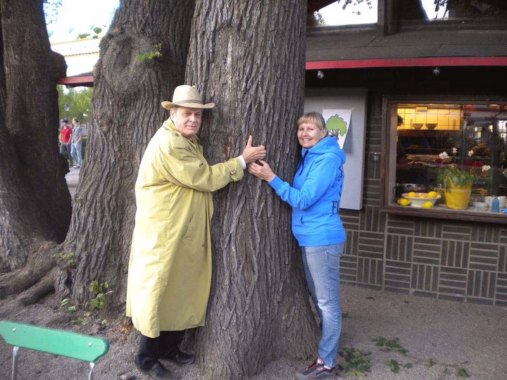
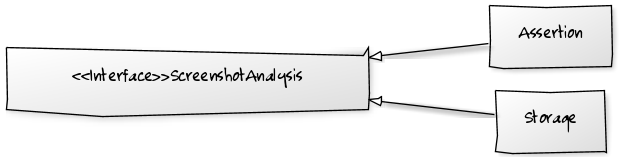

Test sulle immagini
Giorgio Sironi

Collaudare!
Fotografare
Selenium 2 JSON Wire Protocol
GET /session/:sessionId/screenshot
(PNG blob encoded in base64)
Su browser multipli
array(
'browserName' => 'internet explorer',
'host' => SAUCE_HOST,
'port' => 4444,
'desiredCapabilities' => array(
'platform' => 'Windows 2008',
'version' => '9'
),
),

Il riferimento

STORE_SCREENSHOTS=1 phpunit \
> spec/crossbrowser/PaymentPageDesktopTest.php
Confronto
$ phpunit spec/crossbrowser/PaymentPageDesktopTest.php
// under the covers:
$ convert screenshot.png screenshot.pnm
$ imgcmp -f reference.pnm -F screenshot.png -m mae \
> | paste -sd+ | bc
1.025523
// threshold can be as low as 0.0001
$ compare reference.png screenshot.png difference.png
Risultati


Conclusioni
- Un test, tanti browser
- Open source rende questo possibile
- Test robusti richiedono lavoro